Preview · Icon system v2 · eight icons
Eight icons, two file variants.
The icon set — now eight strong with Team and Playbook added to match the original six. Primary strokes are explicit charcoal (#3C3C3C) for light backgrounds, with a paired paper (#FAFAF7) inverted variant per icon for dark. Accent orange (#FC4E2B) is fixed in both. Why two files? Because <img src="icon.svg"> doesn't inherit currentColor from its parent — each file needs to carry its own colour. One file per variant, named icon-name.svg for light, icon-name-inv.svg for dark.
The system — eight icons
Two rings around a filled centre. Focus, prioritisation, the one thing that matters this month.
Accent · centre dot
3×3 grid with one active cell. Structure, operating rhythm, process. The active node inside a defined model.
Accent · top-right cell
Near-complete arc with an arrowhead — always running, never closed. Compounding, iteration, continuous optimisation.
No accent — pure charcoal
Two stacked arrows, orange offset ahead. Speed, trajectory, acceleration past the baseline.
Accent · lower arrow
Mixing-board handles, one live. Performance tuning, multivariate calibration, the right lever at the right moment.
Accent · right handle
Arrow breaking through the structure's edge. Deployment, go-live, the moment strategy becomes action.
Accent · arrowhead
Three nodes in a triangle, the apex filled orange. The named Strategist leading a client's working group. The human face of the OS.
Accent · apex node
Playbook NEW
icon/playbook
Document with an orange leading line — the month's commitment. The monthly Playbook ritual, signed off at start of cycle.
Accent · leading line
Light & dark variants · side by side
Each icon ships as two files. Use icon-name.svg on paper, lime, or any light background. Use icon-name-inv.svg on ink or any dark background. Accent orange stays fixed in both so the visual system reads the same.
 Signalsignal.svg
Signalsignal.svg Signalsignal-inv.svg
 Systemsystem.svg
Systemsystem.svg Systemsystem-inv.svg
Teamteam.svg

Teamteam-inv.svg
 Playbookplaybook.svg
Playbookplaybook.svg Playbookplaybook-inv.svg
On different backgrounds
Paper uses the primary files, ink uses the inverted (-inv) variants, lime uses the primary files (charcoal reads well on lime).
Paper

Ink · use -inv
In context
Priority call this month
Signal sits alongside a heading to mark a prioritisation moment — the bit where the Strategist picks the one thing that matters.
 Each month compounds the last
Each month compounds the last
On dark surfaces we swap to loop-inv.svg. Same geometry, paper stroke instead of charcoal. Accent stays orange.
Background texture
At 7% opacity, icons become ambient texture — visible enough to reinforce the section's meaning, quiet enough not to compete with type. Use the charcoal file on light backgrounds, the paper (-inv) file on dark. Orange accent shouldn't appear at ghost opacity — it'll read as an error.
File index
16 SVG files in total — eight icons, each in two variants:
signal.svg, signal-inv.svg
system.svg, system-inv.svg
loop.svg, loop-inv.svg
momentum.svg, momentum-inv.svg
control.svg, control-inv.svg
execution.svg, execution-inv.svg
team.svg, team-inv.svg
playbook.svg, playbook-inv.svg
Naming rule: primary = lowercase name + .svg. Inverted = same name + -inv.svg. Use the primary on paper / lime / any light background. Use -inv on ink / any dark background. Accent orange is identical in both.